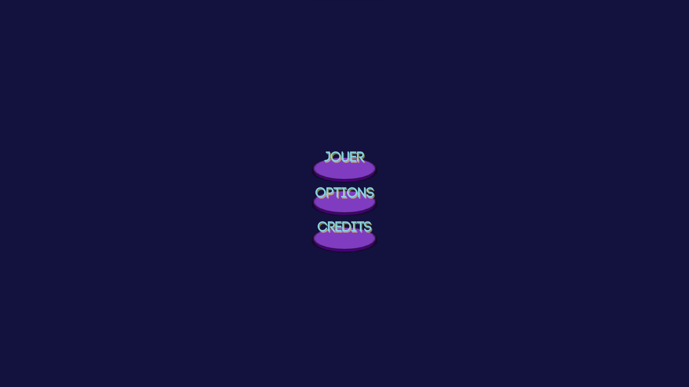
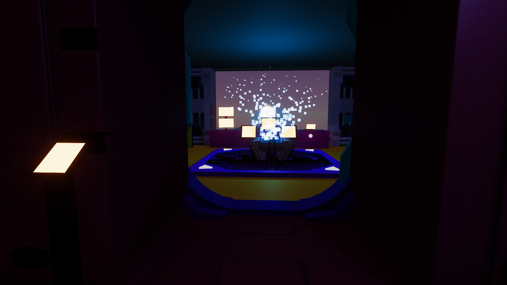
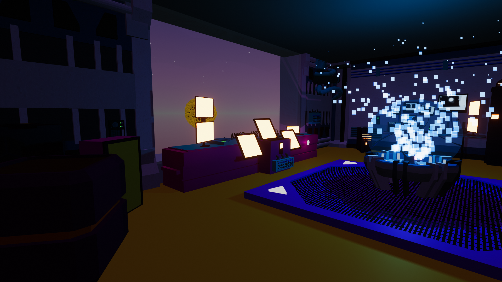
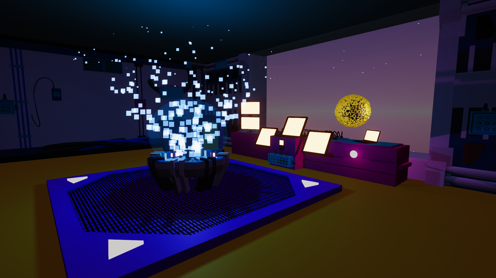
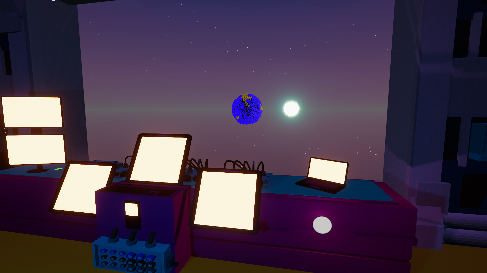

Thématique « une planète hypothétique » (projet de groupe)
Projet de groupe, réalisé dans le cadre du cours de direction artistique. Le projet s'inspire de l'hypothèse Daisyworld pour en proposer une interprétation ludique via un jeu créé avec Unity. L'univers de ce jeu prend ses sources dans le style vaporwave des années 2010, caractérisé par sa fascination pour la culture rétro des années 80 et 90.
Ce jeu combine la vision spatiale et scientifique du modèle qui l'inspire afin de proposer à son utilisateur la possibilité de se déplacer dans un laboratoire scientifique aux allures de cockpit de vaisseau spatial, avec une représentation déstructurée de la Terre faite de lettres.
Je me suis chargée de la mise en place de l'environnement sur Unity et de fonctionnalités telles que le cycle de la Terre ainsi que le changement de couleur des lettres.




